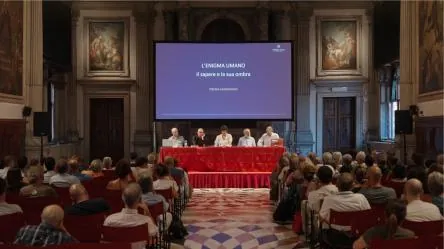

da gio 12 nov a gio 11 nov
SOPHIA NOVA HA RESO DISPONIBILE SUL SITO IL POEMA AUDIOVISIVO «L'ENIGMA UMANO: IL SAPERE E LA SUA O
Il metodo P.A.I.D.E.I.A. aiuta a sviluppare capacità che nessuna macchina potrà mai automatizzare: la riflessione e l'invenzione
 Indicazioni
Indicazioni
- Costi e prenotazioni
- Costo non indicato · Prenotazione non indicata
- Programma
- Programma da verificare. Apri la fonte ufficiale per orari e possibili aggiornamenti.
- In caso di maltempo
- Nessuna indicazione specifica pubblicata.
- Note
- Acquisito automaticamente dalla fonte.
L’EVENTO
Descrizione completa
Il metodo P.A.I.D.E.I.A. aiuta a sviluppare capacità che nessuna macchina potrà mai automatizzare: la riflessione e l'invenzione
È finalmente disponibile sul sito di
SOPHIA NOVA® – L’Unità del Sapere
«L’Enigma Umano: il sapere e la sua ombra»
che racconta il progetto di ricerca e la missione pedagogica in cui è impegnata l'associazione. Il video è accompagnato dagli
interventi degli illlustri relatori
che l'8 settembre 2026 hanno partecipato alla presentazione di SOPHIA NOVA presso la Scuola Grande di San Giovanni Evangelista a Venezia.
Tornare alle origini della conoscenza umana per ricomporne l’unità perduta, superando la frammentazione del sapere in discipline che hanno perso la capacità di dialogare tra loro. È l’ambizioso obiettivo di
P.A.I.D.E.I.A. – Laboratorio transdisciplinare
per la scuola secondaria ideato dal filosofo della conoscenza Francesco Chillemi (Ph.D. negli Stati Uniti), fondatore e presidente del gruppo di lavoro
, che motiva l’urgenza di elaborare nuovi modelli per la formazione dei giovani con gli sconvolgimenti portati dall’avvento dell’intelligenza artificiale.
Dietro l’elaborazione del nuovo modello educativo proposto, vi è un lungo lavoro di ricerca e di confronto con eminenti pensatori come il prof.
Giuseppe Longo (Direttore di ricerca emerito del Centre National de la Recherche Scientifique, ENS, Parigi)
, figura di rilievo internazionale
matematica, dell’informatica teorica e della filosofia della scienza
, tra gli studiosi che meglio hanno interrogato il rapporto tra intelligenza, conoscenza e algoritmi, dimostrando l’infondatezza dell’idea che il pensiero umano possa essere ridotto a un insieme di operazioni computabili.
SOPHIA NOVA ha fornito un primo esempio pratico della proposta educativa con la realizzazione del poema audiovisivo «L’Enigma Umano: il sapere e la sua ombra», ora visibile online sul sito dell'associazione (https://sophianova.it/lenigma-umano-poema-audiovisivo/). Ricorrendo intenzionalmente al linguaggio audiovisivo in cui i giovani sono oggi immersi, il mediometraggio si offre come strumento didattico inedito. Il registro poetico della voce narrante scandisce la sequenza di immagini evocative, che visualizzano il pensiero di figure quali Platone, Aristotele ed Euclide, poi Galileo e Cartesio, fino a Gödel e Turing.
Con questo viaggio nella genealogia del sapere occidentale, l'opera mostra come il pensiero astratto sia divenuto sempre più potente ma sempre meno consapevole della propria origine esperienziale, mediata dagli strumenti linguistici. Il culmine di questo processo si raggiunge con l'attuale dibattito sull'intelligenza artificiale, per cui un linguaggio informatico sofisticato tende ad essere scambiato per un soggetto pensante, che sarebbe perfino prossimo ad acquisire una coscienza.
«L’intelligenza artificiale – ammonisce Longo – va compresa per ciò che è: una tecnologia avanzata di manipolazione di simboli o segni.
Anche i modelli più evoluti di deep learning
, che utilizzano potenti strumenti matematici,
si riducono a sequenze di 0 e 1
nel sistema operativo di un computer. Il pericolo maggiore di una visione distorta dell’AI riguarda la concezione della conoscenza che finiamo implicitamente per adottare:
se riduciamo l’intelligenza umana alle operazioni che una macchina sa eseguire, impoveriamo l’idea stessa di ciò che siamo in quanto umani
. Un malinteso simile non produce solo errori teorici, ma rischia di orientare le scelte culturali, educative, economiche e politiche di una società, portandoci a considerare le
persone sostituibili dalle funzioni che svolgono, anziché
soggetti capaci di produrre nuova conoscenza
sulla questione della formazione
e del futuro delle nuove generazioni, i
l presidente di SOPHIA NOVA Francesco Chillemi
evidenzia che «le trasformazioni introdotte dall’automazione stanno ridefinendo rapidamente il mercato del lavoro e renderanno molte abilità operative sempre più sostituibili. La sfida maggiore nel progettare un nuovo metodo di insegnamento consiste nel superare un equivoco profondamente radicato: credere che educare significhi trasmettere conoscenze già date. In realtà, conoscere non è accumulare informazioni, ma partecipare a un processo creativo attraverso cui gli esseri umani danno forma e senso al mondo che abitano. La scuola non può limitarsi a formare funzionari istruiti nell’esecuzione di procedure. Deve invece diventare il luogo in cui poter
coltivare le capacità che nessuna macchina potrà mai automatizzare: riflessione, intuizione, relazione e invenzione
metodo immersivo e transdisciplinare P.A.I.D.E.I.A.,
proponiamo alla scuola secondaria percorsi laboratoriali, per aiutare gli studenti a sperimentare le connessioni profonde tra le discipline, padroneggiarne i diversi linguaggi e prepararsi a contribuire allo sviluppo della conoscenza, nella consapevolezza della nostra cultura, per il futuro della nostra società».
A sostegno del progetto, sul sito dell'associazione sono disponibili anche
i video integrali degli interventi dei relatori
, presenti all'evento inaugurale:
(economista della cultura, Università di Chieti-Pescara, OCSE e metaLAB Harvard)
(teologo ed epistemologo, professore emerito all’Istituto di Liturgia Pastorale di Padova)
(storica dell’arte, Université Paris 1 Panthéon-Sorbonne, Prix Vitale et Arnold Blokh 2024)
I link ai rispettivi video si trovano a fondo pagina: https://sophianova.it/evento-inaugurale-di-sophia-nova-lenigma-umano/).
EMAIL: info@sophianova.it
SITO WEB: https://sophianova.it/
IL PROGRAMMA
Programma e orari
Appuntamenti raccolti dalle fonti elencate. Dove manca un orario, non è ancora disponibile in questa scheda.
Programma pubblicato
- Dal 2026-11-12 al 2027-11-11
INFORMAZIONI UTILI
Prima di partire
- Controllare la fonte prima di partire.
ORGANIZZAZIONE